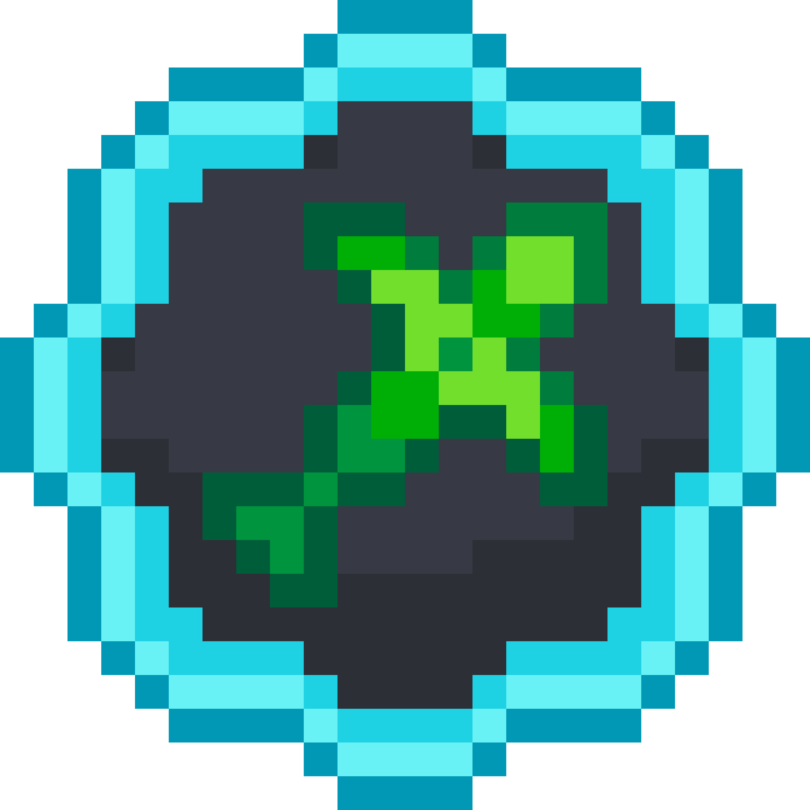

-
-  Puppet Bomber -
Puppet Bomber -
By Afeena
-- Spell Cycle --
- Setup -

Fanatic Mask
>

Totem
Until
>
Awakened
- During Awakened -
Totem
x4-5
>
Aura
- Refresh Chants -
Heretic Mask
>
Lunatic Mask
>
Fanatic Mask
Awakened
You want to build up
Awakened by spamming
Totem when you have
Mask of the Fanatic
(Using high +Totem Cost item like Lower). During
Awakened, you also want to have
Mask of the Fanatic on to activate
 Totemic Shatter.
Totemic Shatter.
Awakened by spamming
Totem when you have
Mask of the Fanatic
(Using high +Totem Cost item like Lower). During
Awakened, you also want to have
Mask of the Fanatic on to activate
Totemic Shatter.
Mystic Masks
Most of the time you would want to be on
Mask of the Fanatic to activate
Totemic Shatter.
Mask of the Fanatic to activate
Totemic Shatter.
Tribal Chants
This node gives significant buffs to yourself and your teammates, make sure to refresh these buffs on cooldown.
 Exploding Puppets
Exploding Puppets
This interacts with the Strings of Fate Major Id, which triggers this node instantly when the
Puppets spawn.
Puppets spawn.
Totemic Shatter
Totem instantly activates all it's effects, including summoning
Puppets, Healing, and Damage. Must have
Mask of the Fanatic.
Puppets, Healing, and Damage. Must have
Mask of the Fanatic.
Haunting Memory
Throws your previous mask when switching giving the enemy a debuff, very good support for teammates.
-- Weapons --

Hadal
- Budget -
Marionette
-- Aspects --

Ritualist' Embodiment of the Ancestral Avatar
Allows you to activate
Awakened faster, and you can sustain
Awakened state for longer.
Awakened faster, and you can sustain
Awakened state for longer.
Aspect of Stances
Buffs all the effects of
Mystic Masks.
Mystic Masks.
Aspect of Beckoned Legion
Puppet Master gains more Puppets. Increasing the damage potential.
Puppet Master gains more Puppets. Increasing the damage potential.
Aspect of the Channeler
Makes it easier to buff teammates with the larger
Tribal Chants range. Good QOL
Tribal Chants range. Good QOL
Aspect of Acceleration
Allows
Puppets and
Effigies to move faster. Good QOL
Puppets and
Effigies to move faster. Good QOL